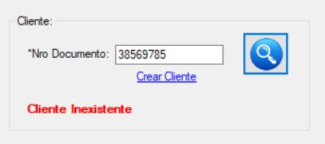
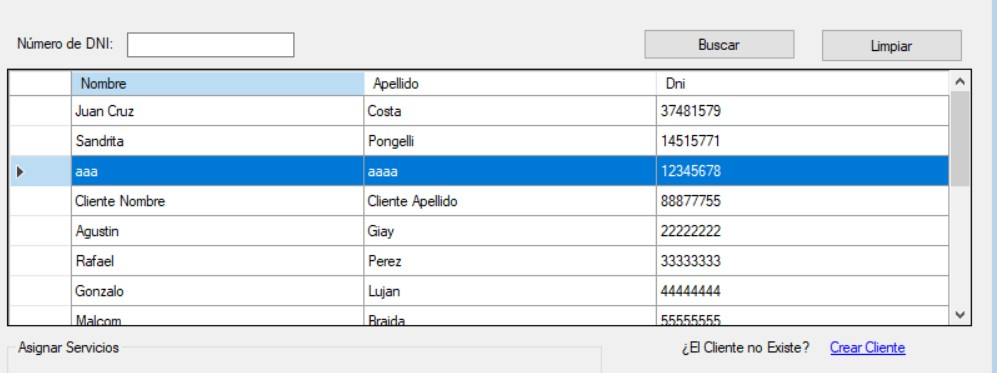
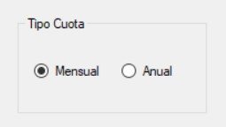

Acceso al Sistema
Para acceder al sistema es necesario tener registrado un usuario activo.
Deberá ingresar su usuario y contraseña para acceder al sistema.

Listo, se ha iniciado sesion.

Gestionar Reservas
Esta opción nos permitirá Generar y modificar Reservas.
En el menu "Recepción", haga click sobre "Generar Reserva"

Se desplegará la siguiente ventana con dos opciones principales: Generar Reserva y Modificar Reserva

Generar Reserva

Para Generar una Reserva debemos completar los siguientes campos:
- Seleccionar Cancha - Obligatorio

- Agregar Accesorios - Opcional

- Ingresar Cliente - Obligatorio
- - Para buscar un cliente se debe ingresar el Número de Documento y pulsar la Lupa
- - Si el cliente no existe lo puede dar de alta seleccionando "Crear Cliente"
- 
- Seleccionar Turno - Obligatorio
- - Para seleccionar un turno solo basta por pulsarlo o bien se puede realiar la búsqueda por fecha
- - Para buscar se debe seleccionar la fecha deseada en el calendario y pulsar la Lupa

- - Para borrar los datos de búsqueda se debe pulsar la Escobilla
- Confirmar Pago - Obligatorio
- - Para poder confirmar la reserva se debe confirmar el pago

Previo a la confirmación se podrán visualizar los datos ingresados y cargados:
Finalmente se podrá ver el mensaje de reserva efectuada correctamente:
Modificar Reserva
Para Modificar una Reserva debemos completar los siguientes campos:
- Ingresar N° Documento Cliente - Obligatorio
- Agregar o Quitar Accesorios - Opcional
- Seleccionar la reserva a modificar o cancelar - Obligatorio

- Modificar o Cancelar Reserva - Obligatorio
- - Si selecciona Modificar Reserva se almacenaran los cambios realizados sobre la reserva seleccionada
- - Si selecciona Cancelar Reserva se cancelará la reserva seleccionada


Finalmente una vez completado los campos podremos Confirmar la operación
Visualizaremos el mensaje de operación realizada con éxito
Gestionar Agenda Diaria
Esta opción nos permitirá Confirmar y Habilitar una cancha reservada, generando su respectivo Alquiler.
En el menu "Recepción", haga click sobre "Agenda Diaria"
Se desplegará la siguiente ventana con las reservas efectuadas para el día de la fecha

Para Confirmar un Alquiler debemos seguir las siguientes instrucciones:
- Seleccionar una reserva - Obligatorio
- - Se puede realiar la búsqueda de reservas ingresando N° Documento de Cliente y seleccionando la Lupa
- - Para borrar los criterios de búsqueda se debe pulsar la Escobilla
- Agregar o Quitar Accesorios - Opcional
- Confirmar Operación
- Modificar o Cancelar Reserva - Obligatorio
- - Si selecciona Modificar Reserva se almacenaran los cambios realizados sobre la reserva seleccionada
- - Si selecciona Cancelar Reserva se cancelará la reserva seleccionada
Finalmente veremos el mensaje de éxito de la operación realizada y el cambio del estado en la reserva
Gestionar Socios
Esta opción nos permitirá Asociar y Modificar condiciones de Socio de los Clientes.
En el menu "Socios", haga click sobre "Gestión de Socios"
Se desplegará la siguiente ventana con dos opciones principales: Crear Socio y Modificar Socio
Crear Socio
Para Crear un Socio debemos seguir las siguientes instrucciones:
- Seleccionar un Cliente - Obligatorio
- - Si el cliente no existe lo puede dar de alta seleccionando "Crear Cliente"
- - Se puede realiar la búsqueda de Cliente ingresando N° Documento de Cliente y seleccionando "Buscar"
- - Para borrar los criterios de búsqueda se debe seleccionar "Limpiar"
- 
- Asignar Servicios - Opcional
- - Para asignar un servicio, debemos seleccionar el servicio de la columna izquierda y presionar el boton con la flecha "->"
- - Para desasignar un servicio, debemos seleccionar el servicio de la columna derecha y presionar el boton con la flecha "<-"
- Confirmar Operación

Finalmente veremos el mensaje de éxito de la operación realizada y la creación del socio (que aún no se encuentra activo)
Para que el socio se encuentre en estado activo debe pagar la cuota, esto se puede realizar pulsando "Ir a Pagar"
Modificar Socio

Para Modificar un Socio debemos seguir las siguientes instrucciones:
- Seleccionar un Socio - Obligatorio
- - Si el Socio no existe lo puede dar de alta seleccionando Crear Socio
- - Se puede realiar la búsqueda de Socio ingresando N° Documento o N° de Socio y seleccionando "Buscar"
- - Para borrar los criterios de búsqueda se debe seleccionar "Limpiar"

- Asignar Servicios - Opcional
- - Para asignar un servicio, debemos seleccionar el servicio de la columna izquierda y presionar el boton con la flecha "->"
- - Para desasignar un servicio, debemos seleccionar el servicio de la columna derecha y presionar el boton con la flecha "<-"
- Confirmar Operación
Finalmente veremos el mensaje de éxito de la operación realizada y la modificación del socio
Para que el socio se encuentre en estado activo debe pagar la cuota, esto se puede realizar pulsando "Ir a Pagar"
Gestionar Pagos
Esta opción nos permitirá registrar los pagos de cuota de los Socios
En el menu "Socios", haga click sobre "Gestión de Pagos"
Se desplegará la siguiente ventana con la información necesaria para registrar el pago de cuota
Para Confirmar un Pago de Cuota debemos seguir las siguientes instrucciones:
- Seleccionar un Socio - Obligatorio
- - Se puede realiar la búsqueda de Socio ingresando N° Documento o N° de Socio y seleccionando "Buscar"
- - Para borrar los criterios de búsqueda se debe seleccionar "Limpiar"
- Servicios Contratados - Solo lectura, Información

- Tipo Cuota - Obligatorio
- - La cuota mensual actualiza el precio de socio y/o servicios contratados por un mes a partir de la fecha actual
- - La cuota anual actualiza el precio de socio y/o servicios contratados por un año a partir de la fecha actual
- - Si el socio se encuentra activo se extenderá su cuota en base a la fecha actual y si existen diferencias de servicios debera abonarlas en el momento
- 
- Confirmación de Pago - Obligatorio

- Confirmar Operación
Finalmente veremos el mensaje de éxito de la operación realizada y el pago realizado correctamente.
Si el socio desea modificar sus servicios actuales podremos seleccionar la opción "Modificar Servicios Socios" que nos lleva a "Gestionar Socios" (visto anteriormente)
Gestionar Clientes
Esta opción nos permitirá Crear y Modificar Clientes.
En el menu "Maestros", haga click sobre "Clientes", "Gestionar Clientes"

Se desplegará la siguiente ventana con dos opciones principales: Crear Cliente y Modificar Cliente

Crear Cliente
Para Crear un Cliente debemos seguir las siguientes instrucciones:
- Ingresar los datos solicitados
- - Número de Documento (Obligatorio)
- - Nombre (Obligatorio)
- - Apellido (Obligatorio)
- - Teléfono (Obligatorio)
- - Teléfono Alternativo (Opcional)
- - Email (Obligatorio)
- Confirmar Operación

Finalmente veremos el mensaje de éxito de la operación realizada y la creación del Cliente
Modificar Cliente
Para Modificar un Cliente debemos seguir las siguientes instrucciones:
- Seleccionar un Cliente - Obligatorio
- - Si el cliente no existe lo puede dar de alta seleccionando "Crear Cliente"
- - Se puede realiar la búsqueda de Cliente ingresando N° Documento de Cliente y seleccionando "Buscar"
- - Para borrar los criterios de búsqueda se debe seleccionar "Limpiar"

- Los datos disponibles para modificar son los siguientes:
- - Número de Documento
- - Nombre
- - Apellido
- - Teléfono
- - Teléfono Alternativo
- Confirmar Operación
Finalmente veremos el mensaje de éxito de la operación realizada y la creación del Cliente
Emitir Comodato
Puede emitir el comodato legal del equipo si usted tiene permisos de Legales, para ello haga click en el botón "Gestión Legal" y luego haga click en "Emitir Comodato"

Se abrirá un formulario como el siguiente:

En el formulario aparecen las solicitudes que ya estan configuradas y listas para ser enviadas mediavez tengan el comodato legal, que representa el ok de Legales para enviar el equipo.
Al hacer click en "Autorizar Prestamo", se genera el comodato legal, que usted podrá imprimir para que sea firmado por el empleado al recibir el equipo.

Equipos Entregados
Esta funcionalidad sirve para ver los equipos que están listos para entregar y marcarlos como entregados cuando ya han sido entregados al empleado
Para ello vaya a la opción "Correo" dentro del menu inicial y luego en la opcion "Equipos Entregados":

Ahora, en la ventana que se abre, va a observar los equipos para entregar y entregados.
Puede seleccionar una de las solicitudes y luego hacer click en el botón "Marcar como Entregada"

Ahora ya la solicitud ha sido marcada en el sistema como entregada.
Equipos a Retirar
En esta parte, usted podrá ver los equipos que están listos para ser retirados del domicilio del empleado y marcarlos como retirados cuando ya se hizo el movimiento. Para ello usted debe tener permisos de Correo dentro del sistema.
Para acceder haga click en el boton "Correo" del menu principal y luego haga click en "Equipos a Retirar"

En la ventana que aparece, puede seleccionar un Equipo a retirar y luego hacer click en "Marcar como Retirado"
Entonces el equpo aparece como Retirado.

Asignar Fecha de Retiro de Equipo
Con esta funcionalidad usted podrá como usuario de Correo Interno, agendar una fecha para ir a retirar el equipo del domicilio del empleado, para ello digígase a la opción "Fechar Retiro de Equipo" que se encuentra dentro del menú "Correo".

Es posible que antes de iniciar el formulario respectivo, aparezca un aviso como este:

Esto sucede por que existen devoluciones con fecha anterior a la actual, entonces el sitema elabora avisos dirigidos a usted para avisarle que ya se vencio la fecha de ir a retirar un equipo.
Para ver los avisos haga click en "Si", de lo contrario haga click en "No" y podrá ver los avisos la próxima vez que quiera fechar las devoluciones.
En caso de que quiera ver los avisos, saldrá la siguiente ventana en la cual podrá hacer click en "Limpiar Avisos" para vaciar la lista de avisos.

Para fechar un retiro, en el formulario "Fechar Devoluciones" podrá elegir la devolución que desea fechar, luego elige la fecha y haga click en "Aplicar".

Controlar Devoluciones
Esta parte es para controlar las devoluciones recibidas en deposito informático, al recibir el equipo por parte de correo, usted debe recibir también la orden de retiro, esta es necesaria para conocer el numero de orden a ingresar en el sistema y los codigos de inventario de los elementos recibidos.
Puede hacer click en la Opcion "Controlar Devolucion" del menú "Deposito Informatico".

Se abrirá un formulario donde tendrá que ingresar el numero de orden de la devolución que aparece en el documento recibido.

Verá que se cargan los datos de la solicitud inicial de la persona, ahora tendrá que ingresar los elementos recibidos, para ello ingrese el codigo de inventario del primer elemento en la casilla de texto que dice C.I. y luego seleccione el estado en el que está recibiendo el elemento.

Observe que se van agregando los elementos en el listado de abajo. Siga asi con los demás elementos recibidos
Al finalizar, haga click en el boton "Hacer Control"

El sistema le notificará si están los elementos completos, en el caso de no estarlo, se generará un aviso para correo interno solicitando que se acuda al domicilo del empleado a retirar lo faltante.
Luego el sistema le indicará si el estado de alguno de los equipos difiere del estado en el que fueron entregados, de ser así, se generará un aviso para Contaduría, indicando que se debe reclamar el seguro del elemento.
Ver Avisos
Se necesita tener accesos de Contaduría para poder ver los avisos.
Para ver los avisos haga click en la opcion "Ver Avisos" del menú "Contaduría"

La ventana que se abre contiene los avisos, para eliminarlos simplemente haga click en "Limpiar Avisos"

Listo, los avisos han sido limpiados.
Cambiar Idioma
Esta funcionalidad permite cambiar el idioma del sistema, para ello digirase a la opción "Cambiar Idioma", del menú "Idiomas"

Se abrirá una ventana con los idiomas disponibles, seleccione el idioma deseado de los disponibles en el sistema y luego haga click en "Aplicar".

Listo, verá como la interfaz cambia al idioma seleccionado.